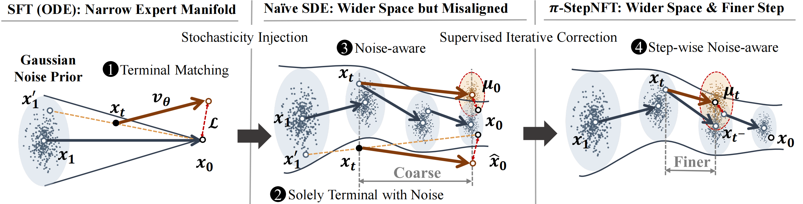
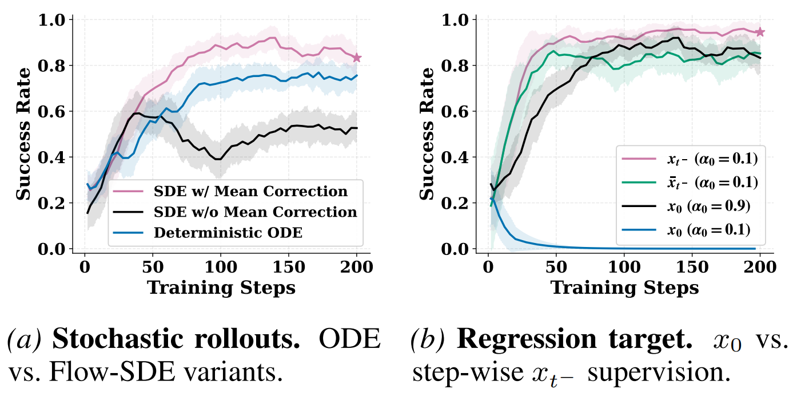
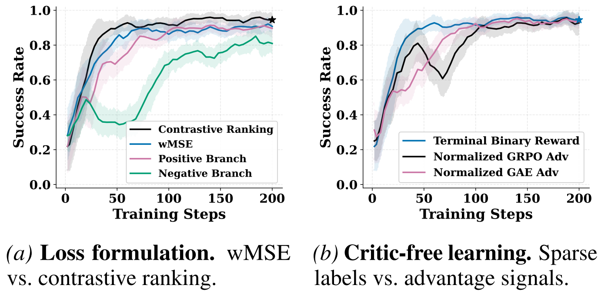
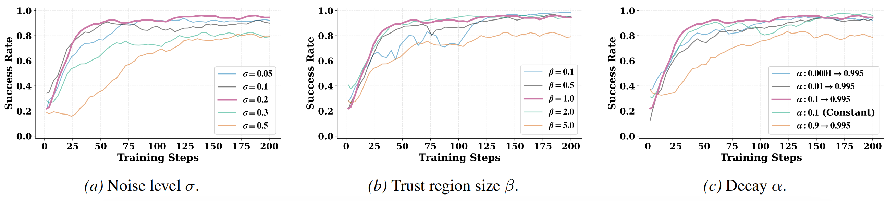

TL;DR
π-StepNFT is a critic-free, likelihood-free online RL fine-tuning method for flow-based VLA policies.
Key insight: wider exploration space needs finer, step-wise alignment — achieved via Flow-SDE exploration + step-wise contrastive ranking.
Highlights
Critic-free & likelihood-free online RL for flow-based VLAs (single forward pass per update).
Flow-SDE sampling widens exploration beyond the expert manifold.
Step-wise supervision + contrastive ranking stabilizes alignment across solver steps.
Strong gains on LIBERO (few-shot) and improved OOD robustness on ManiSkill.
Method at a Glance

How π-StepNFT works (conceptually):
1) Explore wider with Flow-SDE rollouts during training.
2) Align finer: supervise each solver step (local transition) instead of only the final output.
3) Learn preferences via contrastive ranking using positive/negative mirror branches.
4) Update the policy without critic and without likelihood estimation.
Why It Matters
Flow-based VLA policies often collapse into a narrow expert manifold after SFT. When the trajectory drifts at test time, deterministic rollouts struggle to recover. Online RL should expand the recoverable behavior manifold — but naïve stochastic rollouts increase variance and destabilize training.
π-StepNFT couples wide exploration with fine-grained step-wise alignment, enabling stable online improvement and better generalization.
Main Results
Note: comparisons are under the π-RL Flow-SDE setting.
LIBERO (Few-shot)
| Model | Spatial | Object | Goal | Long | Avg. | Δ Avg. |
|---|---|---|---|---|---|---|
| # Full SFT | ||||||
| π0 | 96.8 | 98.8 | 95.8 | 85.2 | 94.2 | — |
| π0.5 | 98.8 | 98.2 | 98.0 | 92.4 | 96.9 | — |
| # Few-shot SFT + RL (π0) | ||||||
| SFT | 65.3 | 64.4 | 49.8 | 51.2 | 57.6 | — |
| πRL (PPO) | 98.4 | 99.4 | 96.2 | 90.2 | 96.0 | +38.4 |
| πRL (GRPO) | 97.8 | 97.8 | 83.2 | 81.4 | 90.0 | +32.4 |
| Ours | 93.5 | 98.0 | 83.7 | 86.7 | 90.5 | +32.9 |
| # Few-shot SFT + RL (π0.5) | ||||||
| SFT | 84.6 | 95.4 | 84.6 | 43.9 | 77.1 | — |
| πRL (PPO) | 99.6 | 100 | 98.8 | 93.0 | 97.9 | +20.8 |
| πRL (GRPO) | 97.4 | 99.8 | 91.2 | 77.6 | 91.5 | +14.4 |
| Ours | 97.8 | 100 | 98.2 | 79.8 | 94.0 | +16.9 |
ManiSkill (IND & OOD)
| Model | IND | OOD | Avg. | ||
|---|---|---|---|---|---|
| Vision | Semantic | Execution | |||
| π0 | |||||
| Full SFT | 38.4 | 32.6 | 8.4 | 13.2 | 18.1 |
| πRL (PPO) | 78.8 | 61.1 | 25.4 | 31.5 | 39.3 |
| Ours | 79.2 | 69.1 | 49.1 | 33.1 | 50.4 |
| π0.5 | |||||
| Full SFT | 40.1 | 40.2 | 16.6 | 22.4 | 26.4 |
| πRL (PPO) | 90.9 | 68.0 | 34.5 | 45.4 | 49.3 |
| Ours | 85.4 | 76.9 | 56.6 | 45.1 | 59.5 |
LIBERO (few-shot): π-StepNFT improves performance by 32.9% over SFT.
ManiSkill (OOD generalization): π-StepNFT improves OOD success by 11.1% over critic-based baselines by mitigating multimodal overfitting.
Key Ablations



Citation
@misc{wang2026pistepnftwiderspaceneeds,
title={$\pi$-StepNFT: Wider Space Needs Finer Steps in Online RL for Flow-based VLAs},
author={Siting Wang and Xiaofeng Wang and Zheng Zhu and Minnan Pei and Xinyu Cui and Cheng Deng and Jian Zhao and Guan Huang and Haifeng Zhang and Jun Wang},
year={2026},
eprint={2603.02083},
archivePrefix={arXiv},
primaryClass={cs.RO},
url={https://arxiv.org/abs/2603.02083},
}